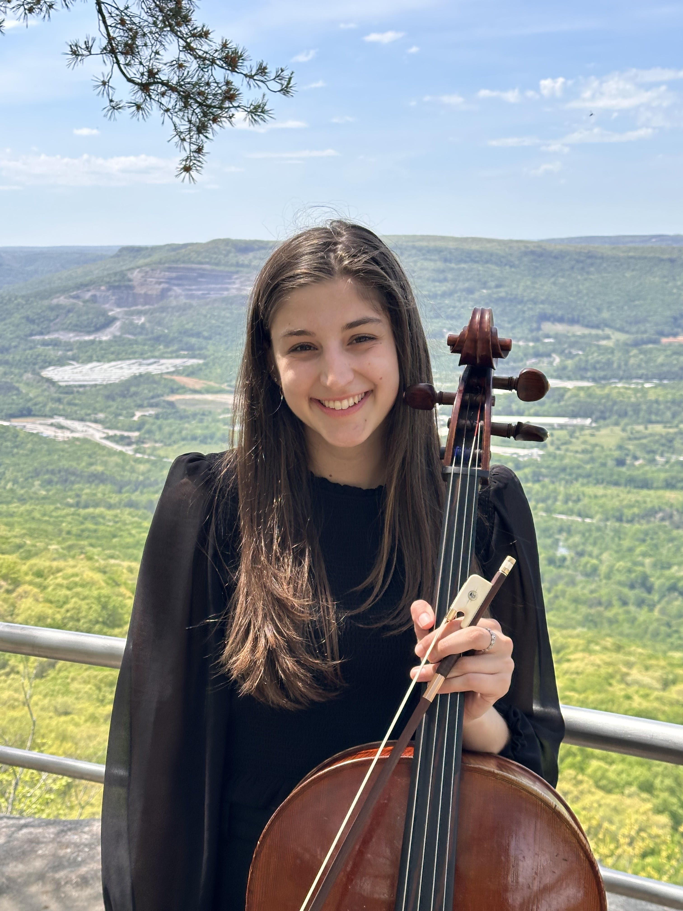

About
Music has been my lifelong passion, and I love sharing it through both performance and teaching. I hold degrees from the Cleveland Institute of Music and the Royal Academy of Music.

Professional cellist and educator in the Atlanta area, sharing beautiful music through performance and thoughtful teaching.
Music has been my lifelong passion, and I love sharing it through both performance and teaching. I hold degrees from the Cleveland Institute of Music and the Royal Academy of Music.
Based in Atlanta, I perform regularly with the The Atlanta Opera, the Atlanta Ballet Orchestra, and professional orchestras throughout the Southeast.
I believe every student learns differently, and I strive to meet each musician where they are while fostering confidence, curiosity, and a lifelong love of music in a supportive environment.